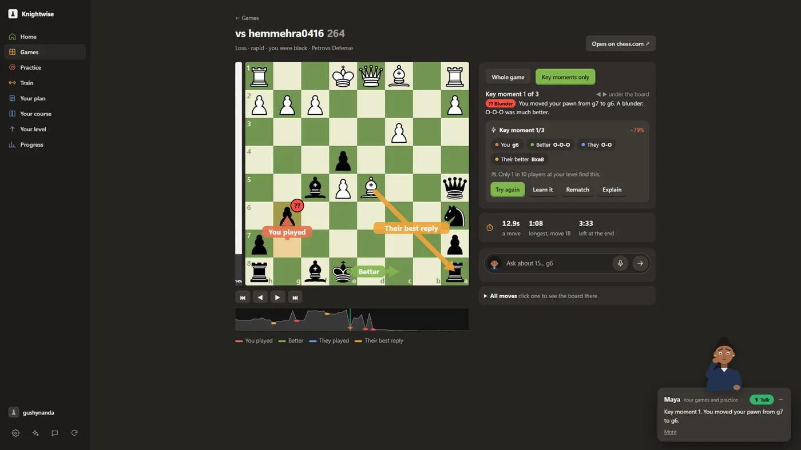

Main project
 Knightwise Live · v1.1
Knightwise Live · v1.1
A personal chess coach for chess.com players. It checks every move of your games with Stockfish, finds the habit that keeps losing you games, trains you on your own positions, and lets you rematch the exact move where it went wrong.

Game review: your move, the better move and their best reply, drawn on the board.
- Finds your habitReads your chess.com games and names the one pattern that costs you the most.
- Rematch the momentReplay the exact position where a game slipped and try the better move.
- Two coaches, one voice eachMaya and Viktor explain in plain words, out loud if you want.
- Fair play by designCompletely off in any live game against a person.